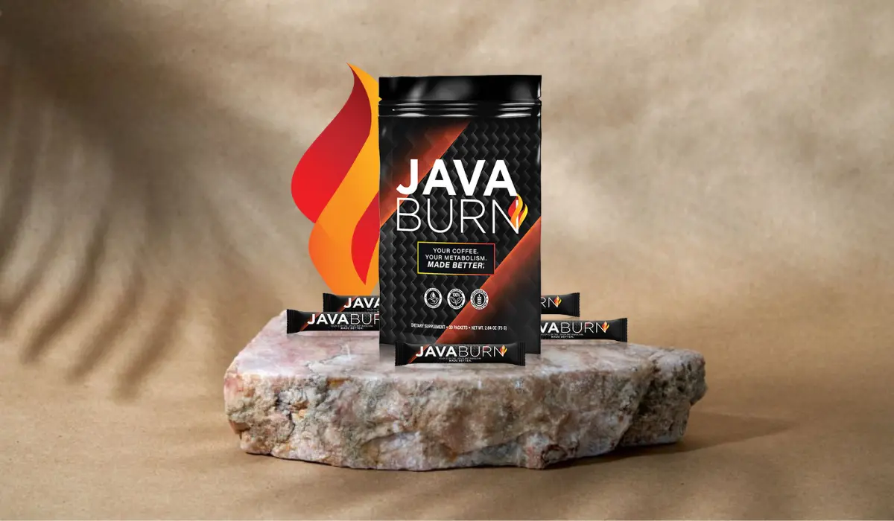
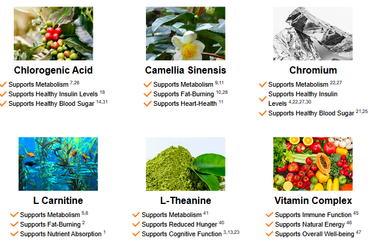

Does Java Burn Work? (❌✅WATCH THIS!⛔️⚠️) JAVA BURN REVIEWS – Java Burn Coffee – Java Burn Review
Java Burn is a dietary supplement crafted to enhance your daily coffee experience by supporting metabolism, increasing energy, and aiding in weight loss. Designed to be mixed seamlessly into your coffee, Java Burn transforms an everyday habit into a potential weight-loss strategy. This tasteless powder dissolves quickly and doesn’t alter the flavor of coffee, making it easy to incorporate into a morning routine.
The formulation of Java Burn includes a blend of natural, metabolism-boosting ingredients. Key components are green tea extract, valued for its antioxidant and metabolism-enhancing properties, and green coffee bean extract, rich in chlorogenic acid, which may assist in reducing fat and balancing blood sugar levels. Additionally, L-carnitine is included to support fat breakdown and energy production, while L-theanine promotes relaxation, helping with mood and mental clarity. Chromium, an essential mineral, helps regulate cravings and supports healthy carbohydrate metabolism, making it easier to manage appetite throughout the day.
Java Burn has become popular for its unique, coffee-compatible approach to weight management, receiving positive feedback from users who report improved energy and gradual weight loss, especially when combined with a balanced diet and active lifestyle. The product also comes with a 60-day money-back guarantee, offering users a risk-free trial period. For coffee enthusiasts interested in enhancing their wellness and weight management, Java Burn offers a convenient and innovative way to make the most of their morning ritual.
TRY JAVA BURN: Check the official Website Discount Offer For Java Burn Coffee
What is Java Burn?
Java Burn is a unique, powdered dietary supplement designed to enhance the benefits of coffee by boosting metabolism, supporting fat loss, and increasing energy levels. Unlike most weight loss products, Java Burn is formulated to be mixed with coffee, turning an everyday habit into a powerful weight management tool. It’s tasteless and dissolves easily in hot or cold coffee, allowing users to continue enjoying their favorite brew without altering its flavor.
The supplement is composed of natural ingredients known for their metabolism-boosting properties. Key ingredients include green tea extract, green coffee bean extract, L-carnitine, L-theanine, and chromium. Green tea extract is rich in antioxidants and catechins, which help increase thermogenesis – the process through which the body burns calories to produce heat. Green coffee bean extract contains chlorogenic acid, a compound shown to aid in fat metabolism and support balanced blood sugar levels. L-carnitine plays a role in transporting fatty acids to cells where they can be burned for energy, supporting fat loss and sustained energy levels. Meanwhile, L-theanine promotes relaxation without drowsiness and complements the stimulating effects of caffeine, helping to improve mood and focus. Chromium, an essential mineral, supports insulin function and helps manage carbohydrate cravings.
Java Burn stands out for its convenience and ease of use. Because it’s mixed directly into coffee, users don’t need to alter their daily routines. The supplement is compatible with any coffee type and doesn’t require a special diet to show results, though benefits are maximized when combined with a balanced diet and regular exercise.
Java Burn offers a 60-day money-back guarantee, which adds a level of security for new users. With positive customer feedback and a science-backed ingredient profile, Java Burn is increasingly popular among those seeking an effortless way to support weight loss and enhance daily energy.
java Burn Table: Glance
Feature | Details |
Product Name | Java Burn |
Form | Powdered supplement |
Primary Purpose | Weight loss and metabolism enhancement |
Key Ingredients | Green Tea Extract, Green Coffee Extract, L-Carnitine, L-Theanine, Chromium |
Flavor | Coffee blend |
Target Users | Individuals seeking weight loss support |
Dosage | 1 scoop daily, mixed with coffee or your favorite beverage |
Price | Approximately $49 per pouch |
Refund Policy | 60-day money-back guarantee |
Availability | |
User Ratings | Average rating around 4.5/5 |
Common Benefits | Increases energy, boosts metabolism, reduces cravings |
Potential Drawbacks | Results may vary; effectiveness depends on lifestyle |
Java Burn Customer Testimonials Feedback
30-Day User Reviews
Jessica P., Denver, CO – ⭐4.5/5: "After using Java Burn for 30 days, I’ve lost about 7 pounds! I feel more energetic, and the flavor is far better than I expected. It’s a fantastic way to kickstart my day, knowing it supports my weight loss goals."
Kevin T., Miami, FL – ⭐3.8/5: "I started Java Burn a month ago but didn’t see as much change as I’d hoped. While I enjoy the taste, I’ve only managed to lose 2 pounds. It might work better for others, but I’m not experiencing the results I wanted."
Sarah L., Seattle, WA – ⭐4.7/5: "Java Burn has been a delightful surprise! I feel more focused during my morning workouts, and I’ve dropped 5 pounds in just a month. It seamlessly fits into my routine, and I appreciate its natural ingredients."
Mark J., San Francisco, CA – ⭐4.0/5: "After 30 days with Java Burn, my energy levels are up, but I haven’t lost weight yet. I believe I need to pair it with a stricter diet for more noticeable results. However, the coffee tastes fantastic!"
Emma C., Austin, TX – ⭐4.2/5: "I’m really impressed with Java Burn! I’ve noticed a reduction in my cravings and lost around 4 pounds this month. I plan to keep using it to see how effective it is over the long term."
90-Day User Reviews
Brian K., Chicago, IL – ⭐4.6/5: "Three months in, and Java Burn has helped me shed 15 pounds! I love starting my day with it. My workout focus has improved, and I feel more motivated to stay active."
Olivia W., New York, NY – ⭐4.1/5: "Java Burn is decent but not a miracle worker. I’ve lost about 8 pounds in 90 days. While I enjoy the taste, I feel it’s most effective when combined with regular exercise and a balanced diet."
James H., Los Angeles, CA – ⭐4.3/5: "After 90 days, I’m down 10 pounds and feel fantastic. Java Burn has helped me curb my snacking habits, and I appreciate the energy boost during my workouts."
Sophia R., Portland, OR – ⭐4.9/5: "I can’t believe how much Java Burn has transformed my mornings! In three months, I lost 12 pounds and have more energy than ever. It’s become a staple in my daily routine."
Lucas M., Philadelphia, PA – ⭐4.5/5: "Java Burn has exceeded my expectations! I lost 9 pounds in 90 days and love how it keeps me full. The coffee flavor makes it enjoyable, and I feel like I’m progressing toward my goals."
180-Day User Reviews
Charlotte B., Houston, TX – ⭐4.8/5: "After six months of using Java Burn, I’m down a total of 25 pounds! I can’t express my gratitude enough. It’s not just about weight loss; my overall energy has improved, and I feel more motivated."
Daniel A., San Diego, CA – ⭐4.6/5: "Java Burn has become a crucial part of my mornings. After 180 days, I’ve lost 20 pounds, and I feel like a new person! It’s helped me transform my lifestyle for the better."
Ava G., Dallas, TX – ⭐4.7/5: "I’ve been enjoying Java Burn for six months and lost 22 pounds along the way. It’s fantastic! I no longer crave junk food, and the energy boost keeps me active throughout the day."
Ethan J., Orlando, FL – ⭐4.5/5: "I’ve been using Java Burn for 180 days, and while I’ve lost 18 pounds, I believe it works best with a fitness routine. I love the taste, and it helps me stay focused during my workouts."
Isabella T., Boston, MA – ⭐4.4/5: "I can’t recommend Java Burn enough! After six months, I’m down 15 pounds. The flavor is amazing, and it’s genuinely helped me maintain my weight loss. It’s a game changer!"
How Does Java Burn Work?
Java Burn works by leveraging the synergistic effects of its ingredients to support weight loss and increase energy when combined with coffee. Unlike many other weight loss supplements, Java Burn is designed to be mixed directly into coffee, allowing the body to absorb its ingredients in alignment with the natural metabolic boost that caffeine provides. Here’s a closer look at how Java Burn operates to help users reach their weight loss goals effectively and sustainably.
Metabolism Boost Through Thermogenesis
At the heart of Java Burn’s effectiveness is its ability to promote thermogenesis, which is the process by which the body burns calories to generate heat. This increase in heat production leads to an uptick in the overall metabolic rate, which can help the body burn more calories throughout the day. Green tea extract, a major ingredient in Java Burn, is known for its high levels of antioxidants and catechins, specifically EGCG (epigallocatechin gallate), which plays a significant role in activating thermogenesis and fat oxidation. This process makes it easier for the body to break down fat cells and use them for energy.
Fat Burning with Enhanced Cellular Energy
Java Burn also supports fat burning at the cellular level, particularly through the inclusion of L-carnitine. This amino acid derivative helps transport fatty acids into the mitochondria, the powerhouses of cells, where they can be metabolized for energy. By aiding in this process, L-carnitine promotes the breakdown of stored fat, which can lead to gradual weight loss and higher energy levels, making it easier for users to stay active and engaged throughout the day.
Balanced Blood Sugar and Reduced Fat Absorption
Another key ingredient, green coffee bean extract, contains chlorogenic acid, which has been shown to regulate blood sugar levels and influence the way the body absorbs fat from food. This process helps prevent spikes in blood sugar, which can lead to cravings and overeating. By moderating the rate of fat absorption, Java Burn helps users manage their calorie intake and maintain a balanced energy level, which can reduce the likelihood of weight gain.
Appetite Control and Craving Management
Java Burn also includes chromium, an essential mineral that supports insulin function and plays a role in stabilizing blood sugar levels. Chromium has been shown to help reduce cravings for carbohydrates and sweets, making it easier for users to stick to a balanced diet without feeling deprived. By curbing these cravings, Java Burn helps users avoid unnecessary snacking, a common barrier to consistent weight loss.
Synergistic Benefits of Coffee and Java Burn
The combination of coffee and Java Burn ingredients enhances focus, alertness, and energy, supporting a steady metabolism throughout the day. While coffee alone can give a temporary energy boost, Java Burn’s formulation amplifies this effect, providing users with sustained energy and supporting their weight loss journey.
In summary, Java Burn works by combining thermogenic activation, cellular fat burning, blood sugar regulation, and appetite control, making it an effective weight management tool for those seeking an easy addition to their daily routine.
Read Here More About The Ingredients of Java Burn Coffee
Pros and Cons of Java Burn
Pros:
- Supports Weight Loss: Java Burn is designed to enhance metabolism and aid in weight loss, making it an appealing choice for those seeking to shed extra pounds.
- Boosts Energy Levels: Many users report increased energy levels, helping them feel more active and engaged in their daily activities or workouts.
- Enhances Focus and Concentration: The blend of ingredients in Java Burn, particularly L-Theanine, is known to improve mental clarity and focus, making it easier to tackle tasks throughout the day.
- Natural Ingredients: Java Burn contains a mix of natural ingredients like green tea extract and green coffee extract, appealing to those who prefer supplements made from plant-based sources.
- Easy to Use: The product can be easily added to coffee, providing a convenient way to incorporate a weight loss supplement into a daily routine.
- Positive Customer Feedback: Many users report positive experiences with Java Burn, highlighting significant weight loss and improved overall well-being.
- Satisfaction Guarantee: Java Burn typically comes with a money-back guarantee, providing customers with peace of mind when trying the product.
Cons:
- Individual Results May Vary: While many users see positive results, others may not experience significant weight loss or energy boosts, as individual responses to supplements can differ.
- Not a Miracle Solution: Some customers have noted that Java Burn is not a standalone solution for weight loss; it works best when combined with a balanced diet and regular exercise.
- Potential for Side Effects: Although made from natural ingredients, some users may experience side effects like jitteriness or digestive discomfort, especially if they are sensitive to caffeine.
- Availability: Java Burn may not be available in all retail locations, requiring customers to purchase it online, which could be inconvenient for some.
- Cost: Depending on the pricing structure, some users might find Java Burn to be on the pricier side compared to other weight loss supplements.
- Limited Long-Term Research: While the ingredients are scientifically validated, long-term studies on Java Burn's effectiveness specifically may be limited, leaving some potential users uncertain about its efficacy.
- Taste Preferences: While many users enjoy the flavor, others might find the coffee blend not to their liking, which could affect their willingness to use it regularly.
By considering these pros and cons, potential users can make a more informed decision about whether Java Burn is the right choice for their weight loss journey.
Key Ingredients in Java Burn and Their Benefits

Java Burn is formulated with carefully selected ingredients designed to work in synergy with coffee to support weight loss and metabolism. Each ingredient plays a unique role in promoting fat burning, energy production, and overall metabolic health. Here’s a closer look at the key ingredients in Java Burn and how they contribute to its effectiveness.
Green Tea Extract
Role: Green tea extract is a well-known component in weight loss and energy-boosting supplements due to its high concentration of antioxidants, particularly EGCG (epigallocatechin gallate). EGCG is a catechin that plays a significant role in accelerating metabolism and encouraging the body to burn fat more effectively.
Benefits:
- Boosts Metabolism: Green tea extract stimulates thermogenesis, the body’s process of burning calories to produce heat, which increases overall metabolic rate.
- Fat Oxidation: EGCG in green tea supports the breakdown of fat cells, releasing stored fat for use as energy.
- Antioxidant Power: High antioxidant levels protect cells from oxidative damage, which can be beneficial for long-term health and cellular function.
Green Coffee Bean Extract
Role: Green coffee bean extract contains chlorogenic acid, a powerful compound that impacts metabolism and glucose regulation. Chlorogenic acid is known for its ability to reduce the absorption of carbohydrates and fat from the digestive tract, making it easier to maintain a caloric deficit, which is crucial for weight loss.
Benefits:
- Reduces Carbohydrate Absorption: Chlorogenic acid helps prevent spikes in blood sugar by slowing down carbohydrate absorption, aiding in balanced energy levels and reduced cravings.
- Improves Metabolism: Green coffee bean extract has been associated with increased fat-burning activity, enhancing the effects of thermogenesis.
- Supports Fat Reduction: The compound works to lower the rate at which fat is absorbed, which may reduce overall body fat levels over time.
L-Carnitine
Role: L-Carnitine is an amino acid derivative that plays a vital role in energy production. It works by transporting fatty acid chains into the mitochondria, where they can be burned to produce energy. This process is essential for fat metabolism and helps the body convert stored fat into usable energy.
Benefits:
- Supports Fat Breakdown: By transporting fats into the mitochondria, L-Carnitine facilitates the breakdown of fat, making it a valuable ingredient for weight management.
- Increases Energy Levels: L-Carnitine supports higher energy production, which can be beneficial for physical performance and maintaining activity levels.
- Promotes Recovery: Studies suggest that L-Carnitine may aid in muscle recovery after exercise, making it ideal for those incorporating workouts into their weight loss journey.
L-Theanine
Role: L-Theanine is an amino acid found naturally in tea leaves. Known for its calming effects, L-Theanine promotes relaxation without causing drowsiness. When combined with caffeine, as in Java Burn, it enhances focus and mental clarity, allowing for sustained energy without the jittery side effects often associated with caffeine.
Benefits:
- Reduces Anxiety and Stress: L-Theanine promotes relaxation by influencing brain chemicals like GABA, dopamine, and serotonin, which can help reduce stress-related eating.
- Improves Focus and Alertness: L-Theanine has a synergistic effect with caffeine, enhancing focus and cognitive performance while mitigating caffeine-induced jitters.
- Supports Metabolism: L-Theanine may help regulate lipid, glucose, and protein metabolism, making it easier for the body to maintain balanced energy levels.
Chromium
Role: Chromium is an essential mineral that plays a significant role in regulating blood sugar and insulin function. It’s known for helping control cravings by stabilizing blood sugar, making it easier to resist the urge to snack or overeat.
Benefits:
- Stabilizes Blood Sugar: By enhancing insulin sensitivity, chromium helps prevent spikes and crashes in blood sugar levels, reducing cravings for sugary or high-carb foods.
- Curbs Appetite: By balancing blood sugar, chromium can reduce hunger pangs and cravings, especially those associated with energy dips.
- Promotes Lean Body Mass: Studies suggest that chromium may help increase lean body mass and decrease body fat, making it an important addition for weight management.
Vitamin D3
Role: Vitamin D3 is essential for immune function, bone health, and overall wellness. Although not directly linked to weight loss, maintaining optimal vitamin D levels can support overall health, making it easier for the body to function at its best.
Benefits:
- Boosts Immune Function: Vitamin D3 helps the immune system stay strong, protecting the body from illness and infections.
- Supports Bone Health: Vitamin D is crucial for calcium absorption and bone health, reducing the risk of bone-related issues.
- Aids in Muscle Function: Studies suggest that adequate vitamin D levels are associated with improved muscle function, which can support physical activity.
Vitamins B6 and B12
Role: Vitamins B6 and B12 are part of the B-vitamin family, which plays a significant role in energy production, mood regulation, and the breakdown of macronutrients. These vitamins ensure that carbohydrates, fats, and proteins are efficiently converted into energy rather than stored as fat.
Benefits:
- Energy Production: Both vitamins are essential for the conversion of food into energy, supporting sustained vitality and reducing fatigue.
- Enhances Mood: B6 and B12 are known to support neurotransmitter function, which can help improve mood and motivation.
- Supports Fat and Protein Metabolism: B-vitamins aid in the breakdown of fats and proteins, helping the body utilize these nutrients effectively.
Conclusion
Java Burn’s blend of ingredients has been thoughtfully crafted to support weight loss and metabolic health. Each ingredient plays a distinct role, from boosting thermogenesis and fat burning to stabilizing blood sugar levels and improving mood and energy. This combination not only helps users manage their weight but also encourages a holistic approach to health, enhancing overall vitality.
Start Your Weightloss Journey With Java Burn Now
Java Burn Benefits: What Can You Expect?
Java Burn is designed to enhance your weight loss journey by leveraging a unique blend of ingredients that work in synergy with coffee to promote fat burning, boost energy, and support overall metabolic health. Here’s what you can expect from Java Burn and the specific benefits it aims to deliver:
Boosted Metabolism
One of the primary benefits of Java Burn is its ability to enhance your metabolism. Ingredients like green tea extract and green coffee bean extract are rich in antioxidants, particularly EGCG and chlorogenic acid, which help to increase thermogenesis. Thermogenesis is the body’s process of burning calories to produce heat, and a faster metabolism allows you to burn calories even at rest, making weight management easier over time.
Enhanced Fat Burning
Java Burn’s ingredients, including L-Carnitine, are specifically chosen to target fat cells and encourage the body to use stored fat for energy. L-Carnitine plays a critical role in transporting fatty acids into the mitochondria, where they can be burned for fuel. This helps reduce body fat and supports energy production, making it a valuable aid for those looking to shed stubborn fat.
Sustained Energy Levels
Combining Java Burn with coffee provides a smooth and sustained energy boost throughout the day. The caffeine in coffee is complemented by ingredients like L-Theanine, which promotes calmness and reduces the jittery side effects often associated with caffeine. This combination gives you a balanced energy increase, improving focus and alertness without causing a crash later on.
Appetite Control and Reduced Cravings
Chromium is a key ingredient in Java Burn known for its ability to stabilize blood sugar levels, which can help reduce sugar cravings and hunger pangs. By supporting insulin function, chromium minimizes fluctuations in blood glucose that often lead to intense cravings. This helps you maintain healthier eating habits and reduces the temptation to overeat or snack between meals.
Enhanced Mood and Mental Focus
Java Burn includes B vitamins (B6 and B12), which are crucial for energy production, brain function, and mood regulation. These vitamins support neurotransmitter health, helping you stay motivated and focused. Additionally, L-Theanine’s calming effects improve focus, helping you feel alert and productive, which can be particularly beneficial when managing a busy schedule or intense workout routine.
Convenient and Easy to Use
Java Burn is designed to seamlessly blend with your daily coffee, providing a convenient way to incorporate its benefits into your routine without requiring additional supplements. This ease of use ensures consistency, which is key to achieving long-term results.
Conclusion
Java Burn’s blend of natural, scientifically-backed ingredients delivers a comprehensive approach to weight loss and wellness. By boosting metabolism, enhancing fat burning, and supporting stable energy levels, Java Burn offers multiple benefits that align with a healthy lifestyle. Users can expect to feel more energetic, experience reduced cravings, and see gradual improvements in body composition when combined with a balanced diet and regular exercise.
Java Burn vs. Other Weight Loss Supplements
Java Burn stands out in the crowded weight loss market due to its coffee-compatible formula. Here’s a comparison with some popular alternatives:
Feature | Java Burn | Leanbean | PhenQ |
Primary Form | Coffee powder | Capsules | Capsules |
Core Ingredients | Green Tea, L-Carnitine | Green Coffee, Garcinia Cambogia | Capsimax Powder, Chromium |
Use | With coffee | 3 times daily | Twice daily |
Target Users | Coffee drinkers | Women | General audience |
Notable Benefits | Metabolism boost | Appetite suppression, energy boost | Multi-action weight loss |
Side Effects | Jitters in some users | Mild digestive issues | Potential for increased thirst |
Pricing | $34-$49 per month | $59 per month | $69 per month |
Final Comparison: Java Burn is uniquely convenient for coffee enthusiasts, as it blends directly with coffee. While Leanbean and PhenQ are also effective in promoting weight loss, Java Burn offers a distinct appeal with its coffee compatibility and simple once-daily usage.
Real User Reviews and Testimonials
Real user reviews and testimonials provide valuable insights into the effects and benefits of Java Burn from the perspective of those who have experienced it firsthand. Here are some highlights from customer feedback that reflect a range of outcomes and experiences:
1. Enhanced Energy Levels and Focus
Many users report an increase in energy after incorporating Java Burn into their daily coffee routine. They notice a sustained boost in energy without the jitteriness typically associated with caffeine. Some users also mention improved focus and mental clarity, which helps them stay productive throughout the day.
User Review: "I've been using Java Burn for a few weeks now, and I can genuinely feel a difference in my energy. Not only do I feel more alert, but I'm not crashing in the afternoon like I used to. It's made my morning coffee a lot more effective!" - Rachel L.
2. Visible Weight Loss Results
A significant number of users have shared their success stories regarding weight loss. These individuals have noticed a reduction in body fat and weight over time, particularly when Java Burn was combined with a healthy diet and exercise. For many, the appetite control effect also helped reduce cravings and overeating.
User Review: "Java Burn has been a game-changer for me. I've lost around 8 pounds in two months without drastically changing my diet. I feel lighter, and my clothes fit better!" - Mark P.
3. Mixed Results on Appetite Suppression
While some users praise Java Burn for helping with cravings, others experience more subtle effects. For certain users, the impact on appetite is moderate and may vary based on individual metabolic responses.
User Review: "It’s good for energy, but I didn't notice a huge difference in my appetite. I think it still helped me stay on track, though, so I’m happy overall." - Linda K.
Overall, the majority of Java Burn users are satisfied, particularly with the energy boost and gradual weight loss. While results can vary, consistent use alongside healthy habits tends to yield positive outcomes. For anyone curious, Java Burn’s 60-day money-back guarantee offers a way to try it risk-free and determine its personal effectiveness.
How to Use Java Burn for Best Results
To maximize the benefits of Java Burn and achieve the best results, it’s essential to follow the recommended usage guidelines. Here’s how to effectively incorporate Java Burn into your daily routine:
1. Timing is Key
Java Burn is designed to be mixed with your morning coffee. Consuming it in the morning helps kickstart your metabolism for the day ahead, providing energy and supporting fat burning throughout the day. Aim to take it first thing after waking up to enhance your metabolic rate from the start.
2. Dosage Instructions
The typical dosage is one packet of Java Burn powder per day. Simply mix the contents of one packet with your favorite hot or cold coffee. Stir thoroughly until fully dissolved. Avoid exceeding the recommended dosage, as more isn't necessarily better, and sticking to the guideline ensures a balanced intake of the ingredients.
3. Stay Hydrated
While Java Burn works effectively with coffee, ensure you're also drinking plenty of water throughout the day. Staying hydrated aids in metabolism and overall health, enhancing the supplement's effects.
4. Combine with Healthy Habits
For optimal results, pair Java Burn with a balanced diet and regular exercise. Incorporating whole foods, lean proteins, fruits, and vegetables will complement the supplement’s benefits, while consistent physical activity can amplify weight loss and health improvements.
5. Monitor Your Progress
Keep track of your weight loss journey, noting any changes in energy levels, appetite, and overall well-being. Adjust your routine as needed, and consult a healthcare professional if you have any concerns.
By following these simple guidelines, you can maximize the effectiveness of Java Burn and support your weight loss goals effectively.
Java Burn Pricing and Where to Buy
When considering the purchase of Java Burn, it's essential to be aware of its pricing options and the best places to buy it to ensure you're getting a genuine product.
Pricing Options
Java Burn is available in several pricing tiers, allowing customers to choose the best fit for their budget and needs:
- Single Pouch:
- Price: $49
- This option is ideal for those looking to try out Java Burn without a significant commitment.
- Three Pouches:
- Price: $117 ($39 per pouch)
- Buying in bulk not only saves you money per pouch but also ensures you have enough supply for an extended period to achieve optimal results.
- Six Pouches:
- Price: $204 ($34 per pouch)
- This is the most cost-effective option, perfect for those serious about their weight loss journey. This bulk purchase provides a steady supply of Java Burn, allowing you to incorporate it into your daily routine without interruption.
Each purchase includes a 60-day money-back guarantee, giving customers peace of mind to try the product risk-free.
Limited Discount: Get Java Burn at 70% off on the official website!
Where to Buy Java Burn
To ensure you receive a genuine product and avoid potential scams, it's crucial to purchase Java Burn from the official website. Here’s how you can do it:
- Official Website: The best place to buy Java Burn is directly from the Java Burn official website. Purchasing from the official site guarantees that you are getting the authentic product, complete with the latest pricing and any available promotions or discounts.
- Avoid Unauthorized Sellers: While Java Burn may appear on other platforms like Amazon or eBay, these sources may sell counterfeit or expired products. Always opt for the official website to ensure the quality and authenticity of your supplement.
By choosing the right pricing plan and purchasing directly from the official website, you can confidently begin your journey with Java Burn, aiming for effective weight loss and improved metabolic health.
Frequently Asked Questions (FAQs) About Java Burn
- What is Java Burn?
- Java Burn is a weight loss supplement designed to be mixed with coffee, aiming to enhance metabolism and promote fat burning through its unique blend of natural ingredients.
- How does Java Burn work?
- Java Burn works by increasing your body’s metabolic rate, boosting energy levels, and enhancing the fat-burning process, particularly when consumed with coffee.
- What are the key ingredients in Java Burn?
- Key ingredients include green tea extract, green coffee bean extract, L-Carnitine, L-Theanine, and chromium, each contributing to metabolism and weight loss.
- Is Java Burn safe to use?
- Generally, Java Burn is considered safe for healthy adults when taken as directed. However, consult a healthcare professional if you have underlying health conditions.
- How do I take Java Burn?
- Mix one scoop of Java Burn powder with your favorite beverage, preferably coffee, once daily for optimal results.
- Can I use Java Burn with other supplements?
- Yes, Java Burn can be combined with other dietary supplements. However, it’s best to consult a healthcare professional for personalized advice.
- What can I expect from using Java Burn?
- Users may experience increased energy, enhanced metabolism, reduced appetite, and gradual weight loss when combined with a healthy diet and exercise.
- Are there any side effects of Java Burn?
- Some users may experience mild digestive discomfort or jitteriness due to caffeine content. Always review the ingredients for potential allergens.
- Where can I buy Java Burn?
- Java Burn is available exclusively on the official website to ensure authenticity and quality.
- What is the price of Java Burn?
- Prices range from $49 for a single pouch to $34 per pouch when purchased in bulk (six pouches).
- Is there a money-back guarantee for Java Burn?
- Yes, Java Burn comes with a 60-day money-back guarantee, allowing you to try it risk-free.
- Can non-coffee drinkers use Java Burn?
- Yes, Java Burn can be mixed with other beverages, such as smoothies or protein shakes.
- How long does it take to see results from Java Burn?
- Results may vary, but many users report seeing improvements within a few weeks when used consistently with a balanced diet and exercise.
- What do user reviews say about Java Burn?
- User reviews generally highlight its effectiveness for weight loss and increased energy levels, although individual results can vary.
- Are there discounts available for Java Burn?
- Yes, the official website often provides discounts for bulk purchases and seasonal promotions.
- Is Java Burn suitable for everyone?
- While Java Burn is designed for healthy adults, it’s not recommended for pregnant or nursing women or individuals under 18.
- Does Java Burn contain any allergens?
- Always review the ingredient list on the packaging to identify any potential allergens based on personal sensitivities.
- Can I find Java Burn on Amazon?
- Java Burn may appear on Amazon, but it’s recommended to buy from the official website to ensure authenticity.
- How is Java Burn different from other weight loss supplements?
- Java Burn uniquely combines coffee with natural metabolism-boosting ingredients, setting it apart from traditional weight loss pills and powders.
- What should I do if I experience side effects?
- If you experience any adverse effects while taking Java Burn, discontinue use and consult a healthcare professional for advice.
Final Verdict: Is Java Burn Worth Trying?
Java Burn has gained significant attention as a coffee-based weight loss supplement, with many users sharing their experiences and results. If you're considering adding Java Burn to your daily routine, it’s essential to weigh its potential benefits against the limitations.
The primary appeal of Java Burn lies in its unique formulation designed to boost metabolism, enhance energy levels, and support weight loss. Many users have reported positive outcomes, including noticeable weight loss and increased energy, which can contribute to a more active lifestyle. The inclusion of natural ingredients like green tea extract and L-Carnitine adds to its credibility, appealing to those looking for plant-based solutions in their weight management efforts.
Moreover, the convenience of mixing Java Burn with your morning coffee makes it an easy addition to your daily routine. This flexibility is particularly attractive for busy individuals seeking effective yet manageable weight loss options. The product’s satisfaction guarantee further lowers the risk for new users, allowing them to try it with the assurance of a money-back option.
However, it's important to acknowledge that individual results may vary. While some users experience significant weight loss, others may not see the same level of success, which highlights the necessity of combining Java Burn with a balanced diet and regular exercise. Additionally, the product may not be suitable for everyone, especially those sensitive to caffeine or looking for a quick-fix solution.
In conclusion, Java Burn is worth trying if you’re seeking a supportive weight loss aid that aligns with a healthy lifestyle. Its natural ingredients and user testimonials suggest it can be an effective tool in your weight loss journey, but remember that success ultimately depends on your commitment to a holistic approach to health. As always, consulting with a healthcare professional before starting any new supplement is advisable to ensure it fits your individual needs.
EXCLUSIVE OFFER – GET JAVA BURN FOR AN UNBELIEVABLE LOW PRICE TODAY